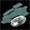

2010/08/15 08:29:42【PATCH】素直クールスキン が発動しました！
パッチイベントのリンクを、このページの下に５つともまとめて置きました。
2010/08/12 01:35:53【PATCH】従順なメイドスキン が発動しました！
2010/08/09 23:46:42【PATCH】ツンデレスキン が発動しました！
大変です！！
ATアンバサダーが、やらかしてしまいました！
ハーヴェスターシャVISTAにかかってしまったウイルス「YankeeDoodle」を駆除する為のワクチンパッチを、他に開発していたパッチと一緒にぶちまけてしまいました！もう、どれがワクチンパッチで、どれがそれ以外のパッチかわかりません…。
しかも他のパッチは、ハーヴェスターシャVISTAの性格を変えてしまうという、恐ろしいパッチばかり！！でも、とにかく見つけてインストールしていくしかありません！
アルポータル４周年祭ページのどこかにというアイコンが転がっています。多分、５個ぐらい転がっているはずです。それを皆さんで探してください。そして、見つけたらそのアイコンをクリックして、リンク先の指示に従ってください。どうか、ハーヴェ様の為によろしくお願いします！！
ここでは、ハーヴェスターシャtwitter内で行われるイベントの告知を行います。告知はtwitter内でもハーヴェ様やATアンバサダーの書き込みによって行われますが、それと同じ事がここにも掲示されます。twitter内ですと、書き込みが流れていってしまいますので、定期的にここを見れば、イベントを逃しにくくなる筈です。
皆さんのご参加、お待ちしております。